# 渲染流水线
渲染流水线的最终目的在于生成或者说是渲染一张二维纹理，即我们在电脑屏幕上看到的所有效果。
# 综述
实际上，Shader 仅仅是渲染流水线中的一个环节，想要让我们的 Shader 发挥出它的作用，我们就需要知道它在渲染流水线中扮演了怎样的角色。
渲染流水线的工作任务在于由一个三维场景出发、生成（或者说渲染）一张二维图像。换句话说，计算机需要从一系列的顶点数据、纹理等信息出发，把这些信息最终转换成一张人眼可以看到的图像。而这个工作通常是由 CPU 和 GPU 共同完成的。
《Real-Time Rendering，Third Edition》一书中将一个渲染流程分成 3 个阶段：应用阶段（Application Stage）、几何阶段（Geometry Stage）、光栅化阶段（Rasterizer Stage）。
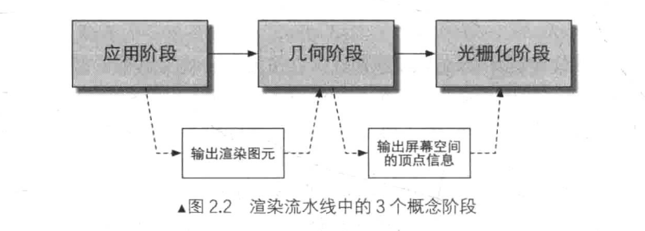
注意：这里仅仅是概念性阶段，每个阶段本身通常也是一个流水线系统，即包含了子流水线阶段。要将这里的 3 个流水线阶段和后面要讲到的 GPU 流水线阶段区分开来。
- 应用阶段：这个阶段是应用主导的，通常由 CPU 负责实现。开发者有 3 个主要任务：⭐️首先，我们需要准备好场景数据，例如场景数据，例如摄像机的位置、视锥体、场景中包含了哪些模型、使用了哪些光源等等；⭐️其次，为了提高渲染性能，我们往往需要做一个粗粒度剔除（culling）工作，以把那些不可见的物体剔除出去，这样就不需要再移交给几何阶段进行处理；⭐️最后，我们需要设置好每个模型的渲染状态。这些渲染状态包括但不限于它使用的材质（漫反射颜色、高光反射颜色）、使用的纹理、使用的 Shader 等。这一阶段最重要的输出渲染所需的集合信息，即渲染图元（rendering primitives）。通俗来讲，渲染图元可以是点、线、三角面等。
- 几何阶段：几何阶段用于处理所有和我们要绘制的几何相关的事情。这一阶段通常在 GPU 上进行。几何阶段负责和每个渲染图元打交道，进行逐顶点、逐多边形的操作。⭐️几何阶段的一个重要任务就是把顶点坐标变换到屏幕空间中，再交给光栅器处理。通过对输入的渲染图元进行多步处理后，这一阶段将会输出屏幕空间的二维顶点坐标、每个顶点对应的深度值、着色等相关信息，并传递给下一个阶段。
- 光栅化阶段：这一阶段会使用上个阶段传递的数据来产生屏幕上的像素，并渲染除最终的图像。这一阶段也是在 GPU 上运行。⭐️光栅化的任务主要是决定每个渲染图元中的哪些像素应该被绘制在屏幕上。它需要对上一个阶段得到的逐顶点数据（例如纹理坐标、顶点颜色等）进行插值，然后再进行逐像素处理。
# CPU 和 GPU 之间的通信
渲染流水线的起点是 CPU，即应用阶段。应用阶段大致可分为下面 3 个阶段：
- 把数据加载到显存中。
- 设置渲染状态。
- 调用 Draw Call。
# 把数据加载到显存中
所有渲染所需的数据都需要从硬盘（Hard Disk Drive， HDD）中加载到系统内存（Random Access Memory，ARM）中。然后，网格和纹理等数据又被加载到显卡上的存储空间 -- 显存（Video Random Access Memory， VRAM）中。这是因为，显卡对于显存的访问速度更快，而且大多数显卡对于 RAM 没有直接的访问权利。
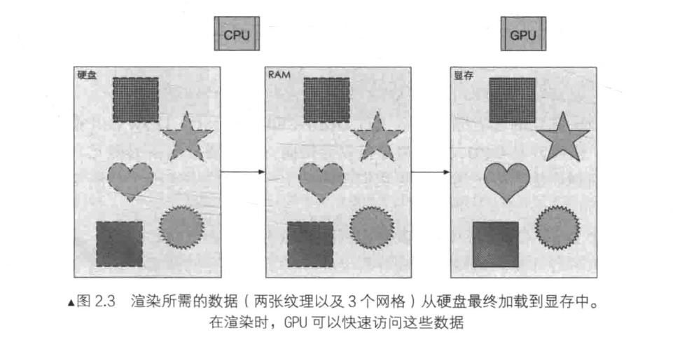
需要注意的是，真实渲染中需要加载到显存中的数据往往比图 2.3 所示复杂许多。例如，顶点的位置信息、法线信息、顶点颜色、纹理坐标等。
当把数据加载到显存中后，RAM 中的数据就可以移除了。但对于一些数据来说，CPU 仍然需要访问它们（例如，我们希望 CPU 可以访问网格数据来进行碰撞检测），那么我们可能就不希望这些数据被移除，因为从硬盘加载到 RAM 的过程是十分耗时的。
在这之后，开发者还需要通过 CPU 来设置渲染状态，从而 “指导 “GPU 如何进行渲染工作。
# 设置渲染状态
渲染状态定义了场景中的网格是怎样被渲染的。例如，使用哪个顶点着色器（Vertex Shader）/ 片元着色器（Fragment Shader）、光源属性、材质等。如果我们没有更改渲染状态，那么所有的网格都将使用同一种渲染状态。
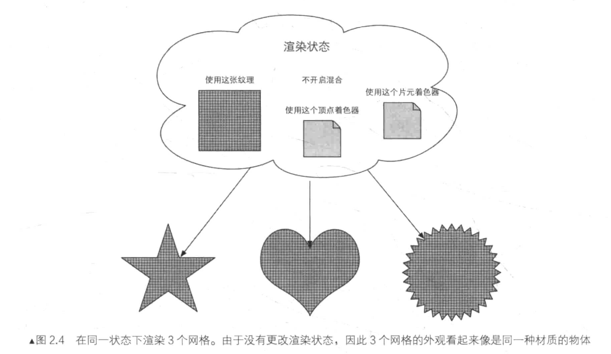
在准备好上述所有工作后，CPU 就需要调用一个渲染命令告诉 GPU，而这个渲染命令就是 Draw Call。
# 调用 Draw Call
实际上，Draw Call 就是一个命令，它的发起方是 CPU，接收方是 GPU。这个命令仅仅会指向一个需要被渲染的图元（primitives）列表，而不会再包含任何材质信息 -- 这是因为我们已经再上一个阶段中完成了！
当给定了一个 Draw Call 时，GPU 就会根据渲染状态（例如材质、纹理、着色器等）和所有输入的顶点数据来进行计算，最终输出成屏幕上显示的那些漂亮的像素。而这个计算过程，就是下一节要讲的 GPU 流水线。
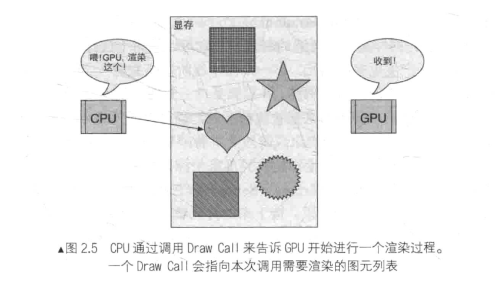
# GPU 流水线
当 GPU 从 CPU 那里得到渲染命令后，就会进行一系列流水线操作，最终把图元渲染到屏幕上。
# 概述
对于概念阶段的后两个阶段，即几何阶段和光栅化阶段，开发者无法拥有绝对的控制权，其实现载体是 GPU。GPU 通过实现流水线化，大大加快了渲染速度。虽然我们无法完全控制这两个阶段的实现细节，但 GPU 向开发者开放了很多控制权。
几何阶段和光栅化阶段可以分成若干更小的流水线阶段，这些流水线阶段由 GPU 来实现，每个阶段 GPU 提供了不同的可配置性或可编程性。
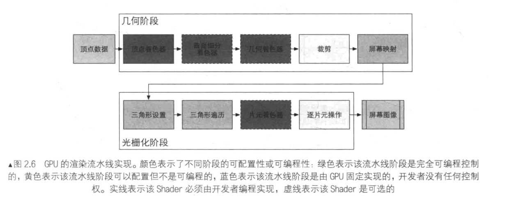
从图中可以看出，GPU 的渲染流水线接受顶点数据作为输入。这些顶点数据是由应用阶段加载到显存中，再由 Draw Call 指定的。这些数据随后被传递给顶点着色器。
** 顶点着色器（Vertex Shader）** 是完全可编程的，它通常用于实现顶点的空间变换、顶点着色等功能。曲面细分着色器（Tessellation Shader）是一个可选的着色器，它用于细分图元。几何着色器（Geometry Shader）同样是一个可选的着色器，它可以被用于执行逐图元（Per-Primitive）的着色操作，或者被用于产生更多的图元。下一个流水线阶段是裁剪（Clipping），这一阶段的目的是将那些不在摄像机视野内的顶点裁剪掉，并剔除某些三角图元的片面。这个阶段是可配置的。例如，我们可以使用自定义的裁剪平面来配置裁剪区域，也可以通过指令控制裁剪三角图元的正面还是背面。几何概念阶段的最后一个流水线阶段是屏幕映射（Screen Mapping）。这一阶段是不可配置和编程的，它负责把每个图元的坐标转换到屏幕坐标系中。
光栅化概念阶段中的三角形设置（Triangle Setup）和三角形遍历（Triangle Traversal）阶段也都是固定函数（Fixed-Function）的阶段。接下来的片元着色器（Fragment Shader），则是完全可编程的，它用于实现逐片元（Per-Fragment）的着色操作。最后，** 逐片元操作（Per-Fragment）** 阶段负责执行很多重要的操作，例如修改颜色、深度缓冲、进行混合等，它不是可编程的，但具有很高的可配置性。
# 顶点着色器
** 顶点着色器（Vertex Shader）** 是流水线的第一个阶段，它的输入来自于 CPU。顶点着色器的处理单位是顶点，也就是说，输入进来的每个顶点都会调用一次顶点着色器。顶点着色器本身不可以创建或者销毁任何顶点，而且无法得到顶点于顶点之间的关系。例如，我们无法得知两个顶点是否属于同一个三角网络。但正是因为这样的相互独立性，GPU 可以利用本身的特性并行化处理每一个顶点，这意味着这一阶段的处理速度会很快。
顶点着色器需要完成的工作主要有：坐标变换和逐顶点光照。当然，除了这两个主要任务外，顶点着色器还可以输出后续阶段所需的数据。
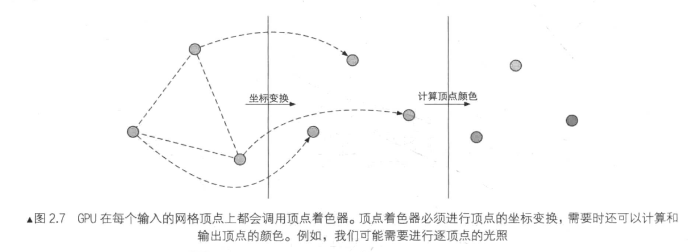
坐标变换。顾名思义，就是对顶点的坐标（即位置）进行某种变换。顶点着色器可以在这一步中改变顶点的位置，这在顶点动画中是非常有用的。例如，我们可以通过改变顶点位置来模拟水面、布料等。但需要注意的是，无论我们在顶点着色器中怎样改变顶点的位置，一个最基本的顶点着色器必须完成的一个工作是，把顶点坐标从模型空间转换到其次裁剪空间。
o.pos = mul(UNITY_MVP, v.position);
类似上面这句代码的功能，就是把顶点坐标转换到其次裁剪坐标系下，接着通常再由硬件做透视除法后，最终得到归一化的设备坐标（Normalized Device Coordinates，NDC）。
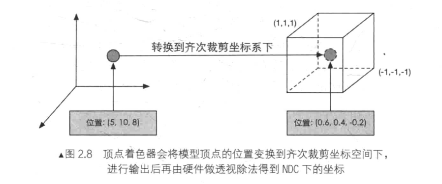
需要注意的是，图 2.8 给出的坐标范围是 OpenGL 同时也是 Unity 使用的 NDC，它的 z 分量范围在 [-1,1] 之间，而在 DirectX 中，NDC 的 z 分量范围是 [0,1]。顶点着色器可以有不同的输出方式。最常见的输出路径是经光栅化后交给片元着色器进行处理。而在现代的 Shader Model 中，它还可以把数据发送给曲面细分着色器或几何着色器。
# 裁剪
由于我们的场景可能会很大，而摄像机的视野范围很有可能不会覆盖所有的场景物体，那些不在摄像机视野范围的物体不需要被处理。而 ** 裁剪（Clipping）** 就是为了完成这个目的而被提出来的。
一个图元和摄像机视野的关系有 3 种：完全在视野内、部分在视野内、完全在视野内。完全在视野内的图元就继续传递给下一个流水线阶段，完全在视野外的图元不会继续向下传递，因为它们不需要被渲染。而那些部分在视野内的图元需要进行一个处理，这就是裁剪。
由于我们已知在 NDC 下的顶点位置，即顶点位置在一个立方体内，因此裁剪就变得很简单：只需要将图元裁剪到单位立方体内。
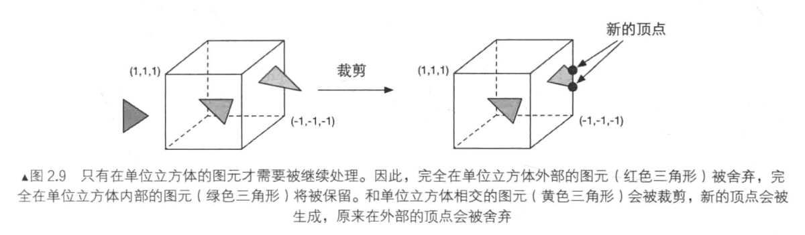
和顶点着色器不同，这一步是不可编程的，即我们无法通过编程来控制裁剪的过程，而是硬件上的固定操作，但我们可以自定义一个裁剪操作来对这一步进行配置。
# 屏幕映射
这一步输入的坐标仍然是三维坐标系下的坐标（范围在单位立方体内）。** 屏幕映射（Screen Mapping）的任务是把每个图元的 x 和 y 坐标转换到屏幕坐标系（Screen Coordinates）** 下。屏幕坐标系是一个二维坐标系，它和我们用于显示画面的分辨率有很大关系。
由于我们输入的坐标范围在 - 1 到 1，因此可以想象到，这个过程实际上是一个缩放的过程。屏幕映射不会对输入的 z 坐标做任何处理。实际上，屏幕坐标系和 z 坐标一起构成了一个坐标系，叫做窗口坐标系（Window Coordinates）。这些值会一起被传递到光栅化阶段。
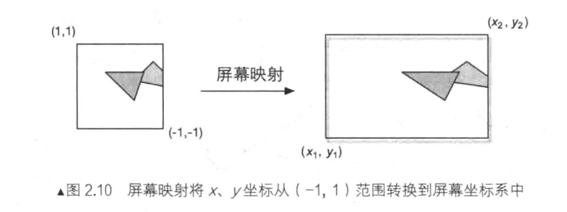
屏幕映射得到的屏幕坐标决定了这个顶点对应屏幕上哪个像素以及距离这个像素有多远。
有一个需要引起注意的地方是，屏幕坐标系在 OpenGL 和 DirectX 之间的差异问题。OpenGL 把屏幕的左下角当成最小的窗口坐标值，而 DirectX 则定义了屏幕的左上角为最小的窗口坐标值。
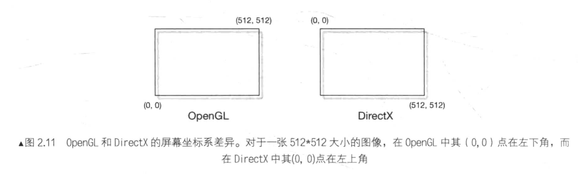
产生这种差异的原因是，微软的窗口都使用了这样的坐标系统，因为这和我们的阅读方式是一致的：从左到右、从上到下，并且很多图像文件也是按照这样的格式进行存储的。
# 三角形设置
由这一步开始就进入了光栅化阶段。从上一个阶段输出的信息是屏幕坐标系下的顶点位置以及和它们相关的额外信息，如深度值（z 坐标）、法线方向、视角方向等。光栅化阶段有两个最重要的目标：计算每个图元覆盖了哪些像素，以及为这些像素计算它们的颜色。
光栅化的第一个流水线阶段是三角形设置（Triangle Setup）。这个阶段会计算光栅化一个三角网格所需的信息。具体的说，上一个阶段输出的都是三角网格的顶点，即我们得到的是三角网格每条边的两个端点。但如果要得到整个三角网络对像素的覆盖情况，我们就必须计算每条边上的像素坐标。为了能够计算边界像素的坐标信息，我们就需要得到三角形边界的表示方式。这样一个计算三角网络表示数据的过程就叫做三角形设置。它的输出是为了给下一个阶段做准备。
# 三角形遍历
三角形遍历（Triangle Traversal）阶段将会检查每个像素是否被一个三角网格锁覆盖。如果被覆盖的话，就会生成一个片元（fragment）。而这样一个找到哪些像素被三角网格覆盖的过程就是三角形遍历，这个扫描也被称为扫描变换（Scan Conversion）。
三角形遍历阶段会根据上一个阶段的计算结果来判断一个三角形网格覆盖了哪些像素，并使用三角网格 3 个顶点的顶点信息对整个覆盖区域的像素进行插值。
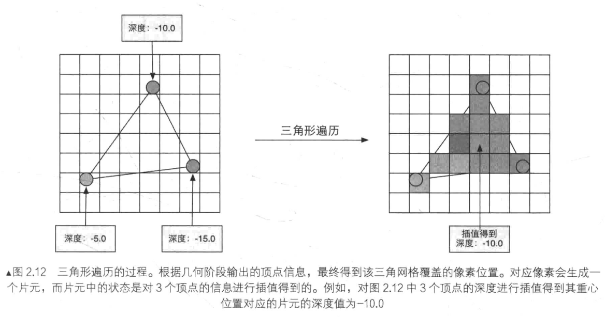
这一步的输出就是得到一个片元序列。需要注意的是，一个片元并不是真正意义上的像素，而是包含了很多状态的集合，这些状态用于计算每个像素的最终颜色。这些状态包括了（但不限于）它的屏幕坐标、深度信息，以及其他从集合阶段输出的顶点信息，例如法线，纹理坐标等。
# 片元着色器
片元着色器（Fragment Shader）是另一个非常重要的可编程着色器阶段。在 DirectX 中，片元着色器被称为像素着色器（Pixel Shader），但片元着色器是一个更合适的名字，因为此时的片元并不是一个真正意义上的像素。
前面的光栅化阶段实际上并不会影响屏幕上每个像素的颜色值，而是会产生一系列的数据信息，用来表述一个三角网络是怎样覆盖每个像素的。而每个片元就负责存储这样一系列数据。真正会对像素产生影响的阶段是下一个流水线阶段 -- 逐片元操作（Per-Fragment Operations）。
片元着色器的输入是上一个阶段对顶点信息插值得到的结果，更具体来说，是根据那些从顶点着色器中输出的数据插值得到的。而它的输出是一个或者多个颜色值。
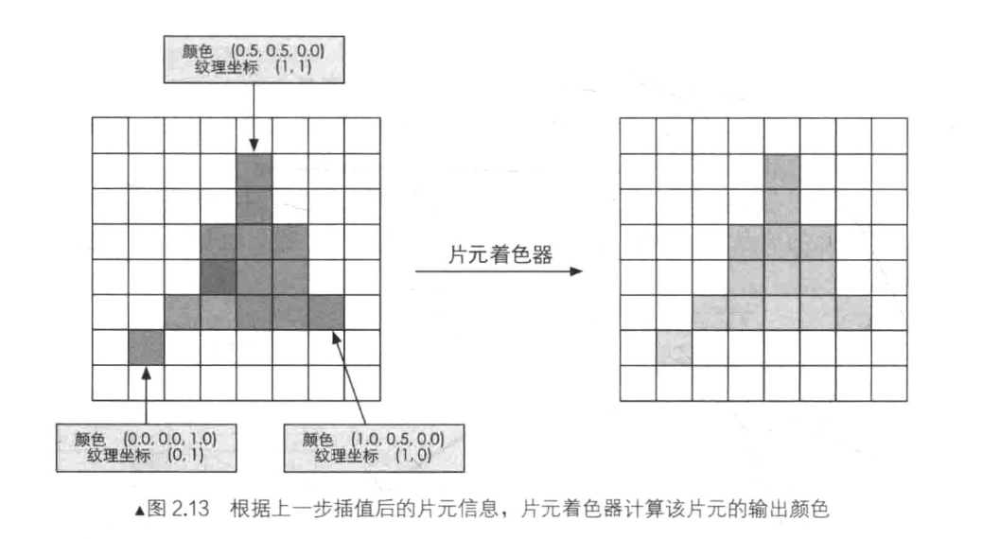
这一阶段可以完成很多重要的渲染技术，其中最重要的技术之一就是纹理采样。为了在片元着色器中进行纹理采样，我们通常会在顶点着色器阶段输出每个顶点对应的纹理坐标，然后经过光栅化阶段对三角网络的 3 个顶点对应的纹理坐标进行插值后，就可以得到其覆盖的片元的纹理坐标了。
虽然片元着色器可以完成很多重要效果，但它的局限在于，它仅可以影响单个片元。也就是说，当执行片元着色器时，它不可以将自己的任何结果直接发送给它的邻居们。有一个情况例外，就是片元着色器可以访问到导数信息（gradient，或者说是 derivation）。
# 逐片元操作
终于到了渲染流水线的最后一步。逐片元操作（Per-Fragment Operations）是 OpenGL 中的说法，在 DirectX 中，这一阶段被称为输出合并阶段（Output-Merger）。
这一阶段有几个主要任务。
- 决定每个片元的可见性。这涉及了很多测试工作，例如深度测试、模板测试等。
- 如果一个皮纳元通过了所有的测试，就需要把这个片元的颜色值和已经存储在颜色缓冲区中的颜色进行合并，或者说是混合。
需要指明的是，逐片元操作阶段是高度可配置性的，即我们可以设置每一步的操作细节。
这个阶段首先需要解决每个片元的可见性问题。这需要进行一系列测试。如果它没有通过其中的某一个测试，那么对不起，之前为了产生这个片元所做的所有工作都是白费的，因为这个片元会被舍弃掉。
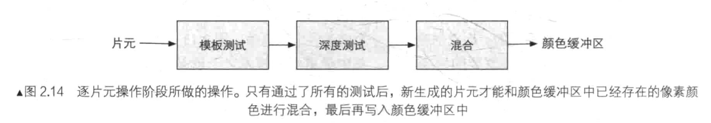
测试的过程实际上是个比较复杂的过程，而且不同的图形接口（例如 OpenGL 和 DirectX）的实现细节也不尽相同。这里给出两个最基本的测试 -- 深度测试和模板测试的实现过程。是否理解这些测试过程将关乎是否可以理解后后面提到的渲染队列，尤其是处理透明效果时出现的问题。
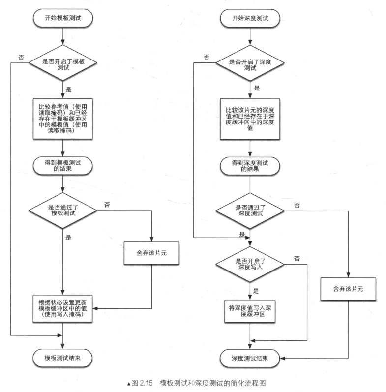
先来看看模板测试（Stencil Test）。与之相关的是模板缓冲（Stencil Buffer）。实际上，模板缓冲和我们经常听到的颜色缓冲、深度缓冲几乎是一类东西。如果开启了模板测试，GPU 会首先读取（使用读取掩码）模板缓冲区中该片元位置的模板值，然后将该值和读取（使用读取掩码）到的参考值（reference value）进行比较，这个比较函数可以是由开发者指定的，例如小于时舍弃该片元，或者大于等于时舍弃该片元。如果这个片元没有通过这个测试，该片元就会被舍弃。不管一个片元有没有通过模板测试，我们都可以根据模板测试和下面的深度测试结果来修改模板缓冲区，这个修改操作也是由开发者指定的。开发者可以设置不同结果下的修改结果，例如，在失败时模板缓冲区保持不变，通过时将模板缓冲区中对应位置的值加 1 等。模板测试通常用于限制渲染的区域。另外，模板测试还有一些更高级的用法，如渲染阴影、轮廓渲染等。
如果一个片元幸运地通过了模板测试，那么它会进行下一个测试 -- 深度测试（Depth Test）。这个测试同样是可以高度配置的。如果开启了深度测试，GPU 会把该片换的深度值和已经存在于深度缓冲区中的深度值进行比较。这个比较函数也是可由开发者设置的，例如小于时舍弃该片元，或者大于等于时舍弃该片元。通常这个比较函数是小于等于的关系，即如果这个片元的深度值大于等于当前深度缓冲区中的值，那么就会舍弃它。这是因为，我们总想只显示出离摄像机最近的物理，而那些被其他物体遮挡的就不要出现在屏幕上。如果这个片元没有通过这个测试，该片元就会被舍弃。和模板测试有些不同的是，如果一个片元没有通过深度测试，它就没有权力更改深度缓冲区中的值。而如果它通过了测试，开发者还可以指定是否要用这个片元的深度值覆盖掉原有的深度值，这是通过开启 / 关闭深度写入来做到的。
如果一个幸运的片元通过了上面所有测试，它就可以自豪地来到合并功能的面前。
这里所讨论的渲染过程是一个物体接着一个物体画到屏幕上的。而每个像素的颜色信息被存储在一个名为颜色缓冲的地方。因此，当我们执行这次渲染时，颜色缓冲中往往已经有了上次渲染之后的颜色结果，那么，我们是使用上一次渲染之后的颜色结果，还是进行其他处理？这就是合并需要解决的问题。
对于不透明物体，开发者可以关闭 ** 混合（Blend）** 操作。这样片元着色器计算得到的颜色值就会直接覆盖掉颜色缓冲区中的像素值。但对于半透明物体，我们就需要使用混合操作来让这个物体看起来是透明的。
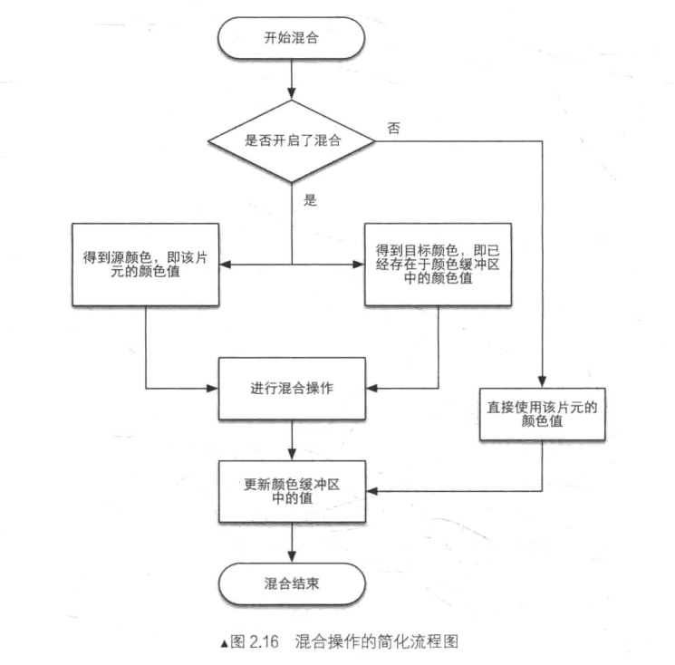
混合操作也是可以高度配置的：开发者可以选择开启 / 关闭混合功能。如果没有开启混合功能，就会直接使用片元的颜色覆盖掉颜色缓冲区中的颜色。如果开启了混合，GPU 会取出源颜色和目标颜色，将两种颜色进行混合。源颜色指的是片元着色器得到的颜色值，而目标颜色则是已经存在于颜色缓冲区中的颜色。之后，就会使用一个混合函数来进行混合操作。这个混合函数通常和透明统到息息相关，例如根据透明通道的值进行相加、相减、相乘等。
上面给出的测试顺序并不是唯一的，而且虽然从逻辑上来说这些测试是在片元着色器之后进行的，但对于大多数 GPU 来说，它们会尽可能在执行片元着色器之前就进行这些测试。
作为一个想充分提高性能的 GPU，它会希望尽可能早地指导哪些片元是会被舍弃的，对于这些片元就不需要再使用片元着色器来计算它们的颜色。再 Unity 给出的渲染流水线中，我们也可以发现它给出的深度测试是在片元着色器之前。深度测试提前执行的技术通常也被称为 Early-Z 技术。
但是，如果将这些测试提前的话，其检测结果可能会与片元着色器中的一些操作冲突。例如，如果我们再片元着色器进行了透明度测试，而这个片元没有通过透明度测试，我们会在着色器中调用 API（例如 clip 函数）来手动将其舍弃掉。这就导致 GPU 无法提前执行各种测试。因此，现代的 GPU 会判断片元着色器的操作是否和提前测试发生冲突，如果有冲突，就会禁用提前测试。但是，这样也会造成性能上的下降，因为有更多片元需要被处理了。这也是透明度测试会导致性能下降的原因。
当模型的图元经过了上面层层计算和测试后，就会显示到我们的屏幕上。我们的屏幕显示的就是颜色缓冲区中的颜色值。但是，为了避免我们看到那些正在进行光栅化的图元，GPU 会使用 ** 双重缓冲（Double Buffering）的策略。这意味着，对场景的渲染是在幕后发生的，即在后置缓冲（Back Buffer）中。一旦场景已经被渲染到了后置缓冲中，GPU 就会交换后置缓冲区和前置缓冲（Front Buffer）** 中的内容，而前置缓冲区是之前显示在屏幕上的图像。因此，保证了我们看到的图像总是连续的。
# 总结
虽然渲染流水线比较复杂，但 Unity 为我们封装了很多功能。更多的时候，我们只需要在一个 Unity Shader 设置一些输入、编写顶点着色器和片元着色器、设置一下屏幕状态就可以达到大部分常见的屏幕效果。但这样的缺点在于，封装性会导致编程自由度下降，容易迷失方向，无法掌握其背后的原理，并在出现问题时，往往无法找到错误原因，这是在学习 Unity Shader 时普遍的遭遇。建议：多看教程，一个教程看不懂就换个教程，别指望能靠一个教程就把所有的东西都学会。
# 一些容易困惑的地方
# 什么是 OpenGL/DirectX
OpenGL 和 DirectX 是图像应用编程接口，这些接口用于渲染二维或三维图形。可以说这些接口架起了上层应用程序和底层 GPU 的沟通桥梁。一个应用程序向这些接口发送渲染命令，而这些接口会一次向显卡驱动（Graphics Driver）发送渲染命令，这些显卡驱动是真正指导如何和 GPU 通信的角色，正是它们把 OpenGL 或者 DirectX 的函数调用翻译成了 GPU 所能够听懂的语言，同时它们也负责把纹理等数据转换成 GPU 所支持的格式。一个比喻是，显卡驱动就是显卡的操作系统。
概括来说，我们的应用程序运行在 CPU 上。应用程序可以通过调用 OpenGL 或 DirectX 的图形接口将渲染所需的数据，如顶点数据、纹理数据、材质参数等数据存储在显存中的特定区域。随后，开发者可以通过图像编程接口发出渲染命令，这些渲染命令也被称为 Draw Call，它们将会被显卡驱动翻译成 GPU 能够理解的代码，进行真正的绘制。
因为显卡驱动的存在，几乎所有的 GPU 都既可以和 OpenGL 合作，也可以和 DirectX 一起工作。显卡制作商只需要提供支持 OpenGL 和 DirectX 接口的显卡驱动即可。
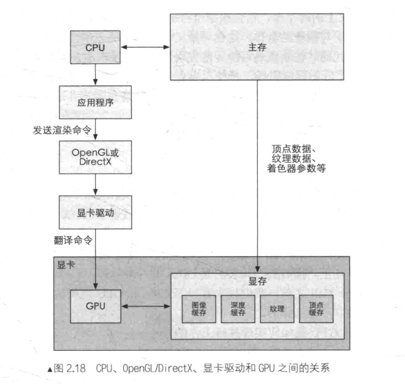
# 什么是 HLSL、GLSL、Cg
在可编程管线出现之前，为了编写着色器代码，开发者们学习汇编语言。为了给开发者们打开更方便的大门，就出现了更高级的着色语言（Shading Language）。着色语言是专门用于编写着色器的，常见的着色语言有 DirectX 的 HLSL（High Level Shading Language）、OpenGL 的 GLSL（OpenGL Shading Language）以及 NVIDIA 的 Cg（C for Graphic）。HLSL、GLSL、Cg 都是 “高级（High-Level）” 语言，但这种高级是相对于汇编语言来说的，而不是像 C# 相对于 C 的高级那样。这些语言会被编译成与机器无关的汇编语言，也被称为中间语言（Intermediate Language，IL）。这些中间语言再交给显卡驱动来翻译成真正的机器语言，即 GPU 可以理解的语言。
GLSL 的优点在于它的跨平台性，它可以在 Windows、Linux、Mac 甚至移动平台等多种平台上工作，但这种跨平台性是由于 OpenGL 没有提供着色器编译器，而是由显卡驱动来完成着色器的编译工作。也就是说，只要显卡驱动支持对 GLSL 的编译它就可以运行。这种做法的好处在于，由于供应商完全了解自己的硬件构造，它们知道怎样做可以发挥出最大的作用。换句话说，GLSL 是以来硬件，而非操作系统层级的。
而对于 HLSL，是由未然控制着色器的编译，就算使用了不同的硬件，同一个着色器的编译结果也是一样的（前提是版本相同）。但也因此支持 HLSL 的平台相对比较有限，几乎完全是微软自己的产品，如 Windows、Xbox 360 等。这是因为在其他平台上没有可以编译 HLSL 的编译器。
Cg 则是真正意义上的跨平台。他会根据平台的不同，编译成相应的中间语言。Cg 语言的跨平台性很大原因取决于与微软的合作，这也导致 Cg 语言的语法和 HLSL 非常像，Cg 可以无缝移植成 HLSL 代码。但缺点是可以无法完全发挥出 HLSL 的最新特性。
对于 Unity 平台，我们同样可以选择使用哪种语言。在 Unity Shader 中，我们可以选择使用 “Cg/HLSL” 或者 “GLSL”。带引号是因为 Unity 里的这些着色语言并不是真正意义上的对应着色语言，尽管它们的语法几乎一样。
# 什么是 Draw Call
问题一：CPU 和 GPU 是如何实现并行工作的？
如何让 CPU 和 GPU 可以并行工作，使用到了一个叫做 ** 命令缓冲区（Command Buffer）** 的东西。
命令缓冲区包含了一个命令队列，由 CPU 向其中添加命令，而由 GPU 从中读取命令，添加和读取的过程是互相独立的。命令缓冲区使得 CPU 和 GPU 可以相互独立工作。当 CPU 需要渲染一些对象时，它可以向命令缓冲区中添加命令，当 GPU 完成了上一次的渲染任务后，它就可以从命令队列中再取出一个命令并执行它。
命令缓冲区中的命令有很多种类，而 Draw Call 是其中一种，其他命令还有改变渲染状态等（例如改变使用的着色器，使用不同的纹理等）。
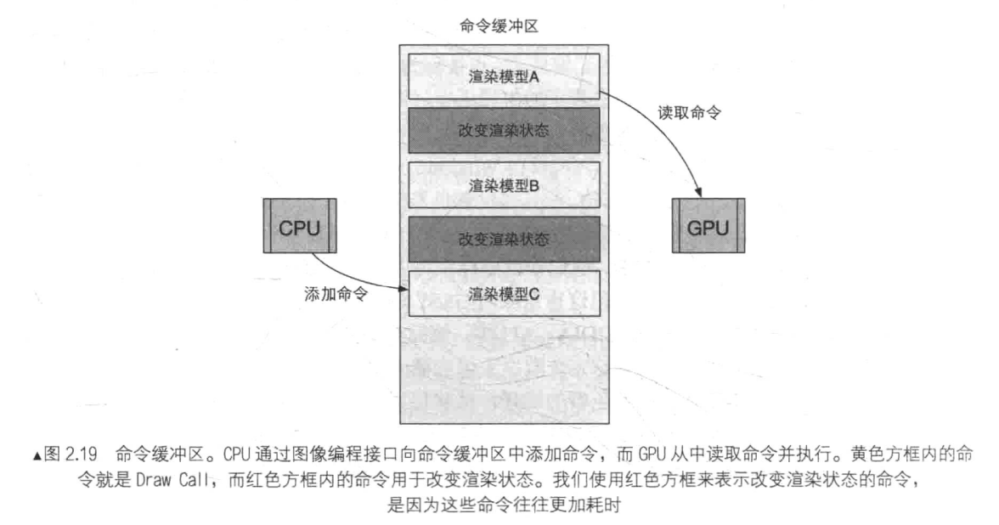
问题二：为什么 Draw Call 多了会影响帧率？
在每次调用 Draw Call 之前，CPU 需要向 GPU 发送很多内容，包括数据、状态和命令等。在这一阶段，CPU 需要完成很多工作，例如查看渲染状态等。而一旦 CPU 完成了这些准备工作，GPU 就可以开始本次的渲染。GPU 的渲染能力很强，渲染 200 个还是 2000 个三角网格通常没有什么区别，因此渲染速度往往快于 CPU 提交命令的速度。如果 Draw Call 的数量太多，CPU 就会把大量时间花费在提交 Draw Call 上，造成 CPU 的过载。
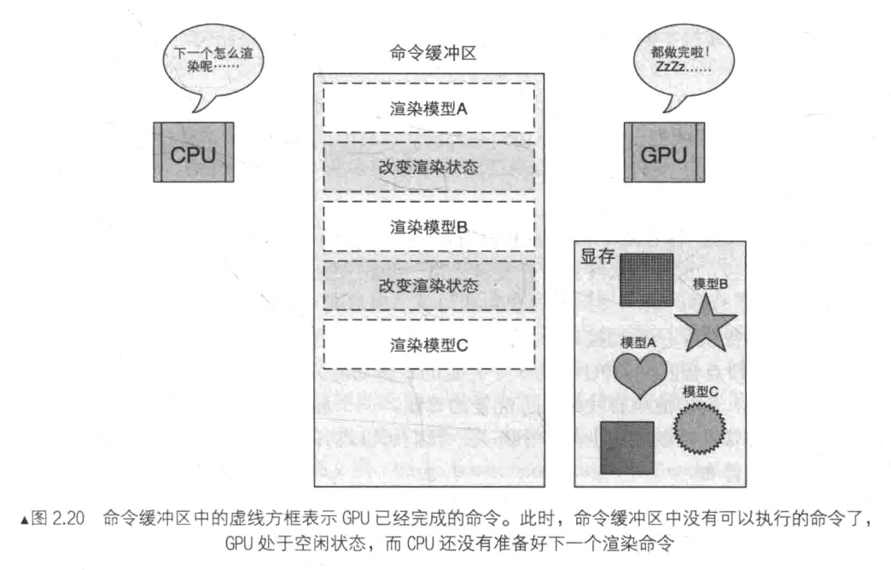
问题三：如何减少 Draw Call？
减少 Draw 的方法有很多，这里我们仅讨论使用 ** 批处理（Batching）** 的方法。
提交大量很小的 Draw Call 会造成 CPU 的性能瓶颈，即 CPU 把时间都花费在准备 Draw Call 的工作上了。那么，一个很显然的优化想法就是把很多小的 DrawCall 合并成一个大的 DrawCall，这就是批处理的思想。
需要注意的是，由于我们需要在 CPU 的内存中合并网格，而合并的过程是需要消耗时间的。因此，批处理技术更加适合那些静态的物体，例如不会移动的大地、石头等，对于这些静态物体我们只需要合并一次即可。当然，我们也可以对动态物体进行批处理。但是，由于这些物体是不断运动的，因此每一帧都需要重新进行合并然后再发给 GPU，这对空间和时间都会造成一定的影响。
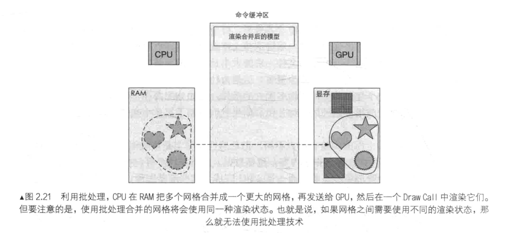
在游戏开发过程中，为了减少 Draw Call 的开销，有两点需要注意。
- 避免使用大量很小的网络。当不可避免地需要使用很小的网络结果时，考虑是否可以合并它们。
- 避免使用过多的材质。尽量在不同的网格之间共用同一个材质。
# 什么是固定渲染管线
固定函数的流水线（Fixed-Function Pipeline），也称为固定管线，通常是指在较旧的 GPU 上实现的渲染流水线。这种流水线只给开发者提供一些配置操作，但开发者没有对流水线阶段的完全控制权。
随着 GPU 的发展，固定管线已经逐渐退出历史舞台。